CMP 717 - Practical 3: Segmenting images using Markov Random Fields
Problem 1.1
In this part, I have used 4 different images. I tried to choose them with different features. Below you can see the images, their bg/fg maps and algorithm results.
| Lena, similar colors, distinctive textures | Caterpillar, distinctive colors, fuzzy outline |
| 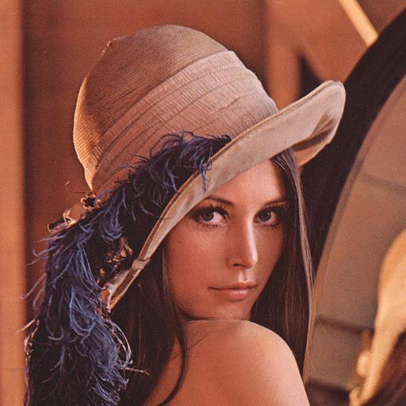 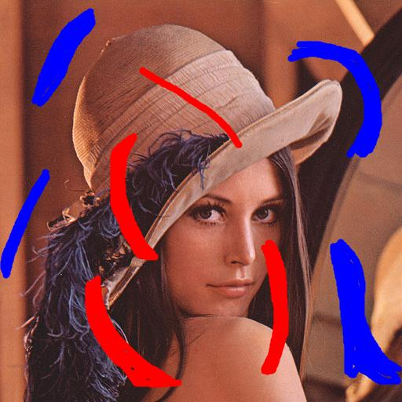 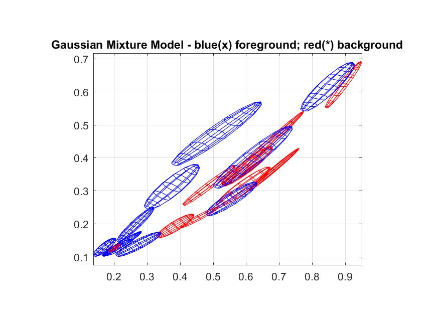 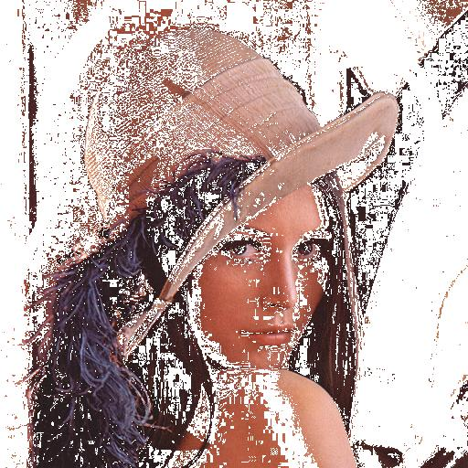 | 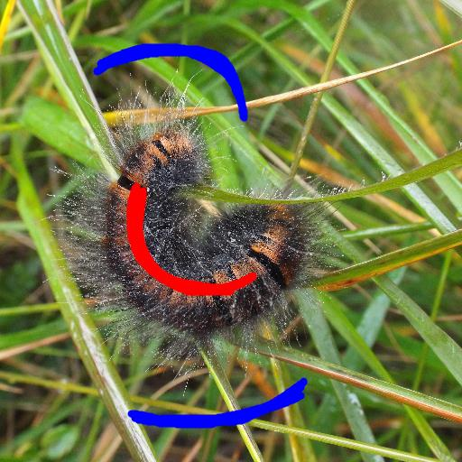 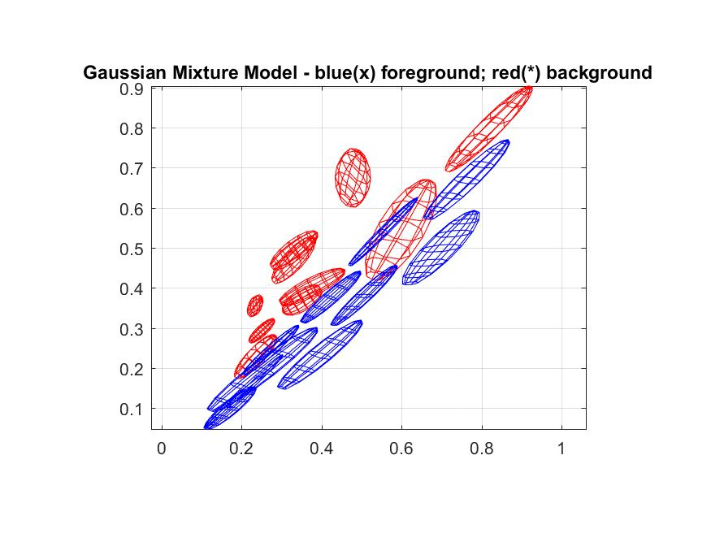 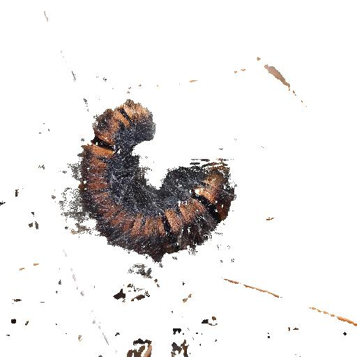 |
| Kingfisher, some color similarities, distinctive textures | Wall, similar colors, similar textures |
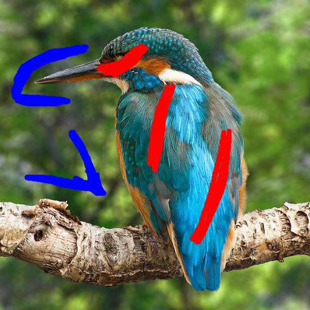
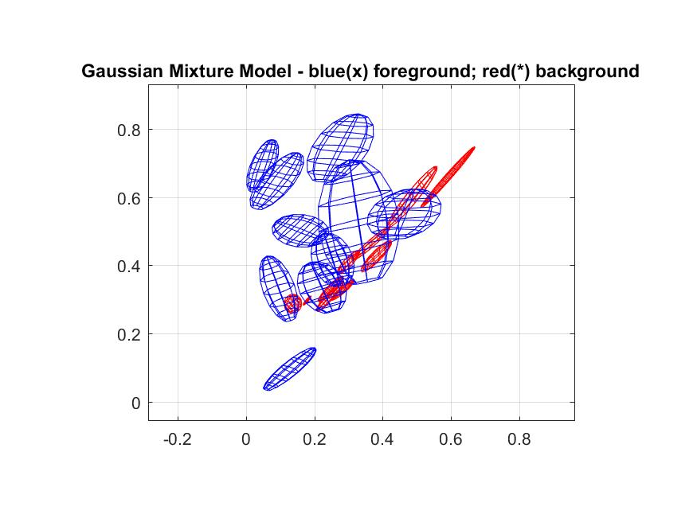

|
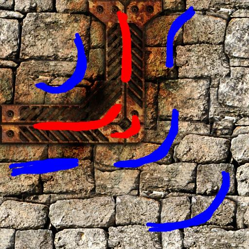 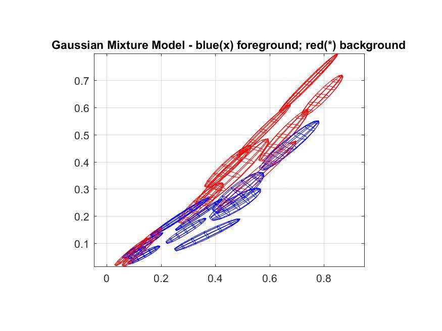 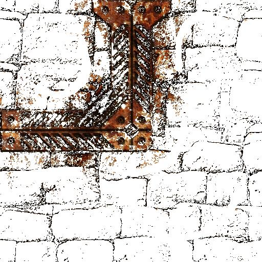 |
I thought the hardest scenarios were Wall and Caterpillar but caterpillar turned out better than I expected.
For caterpillar, since the texture and color of thin hair around the caterpillar is very different from rest of its body and the background, it is easy to select it as background and background.
For wall, whole image is textured and textures are somewhat similar. The general color structure and intensities are also similar. These two properties make this image a hard case for general gaussian mixture algorithm. I have altered foreground/background map to improve the performance, but it hasn't improved by a whole lot; wall texture can still be seen in the foreground extracted image, and frame isn't crisp clear, either.
| 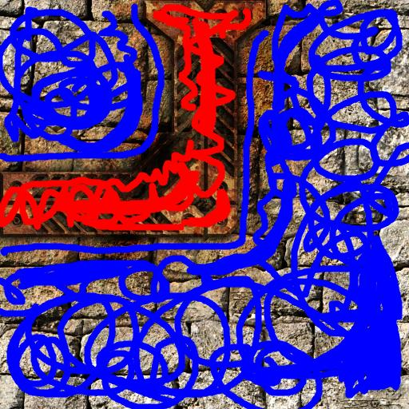 |
I have set iteration count to 25 and modified Train_Dictionary function to report time spent. Then I have collected those data and parsed it with cardinality_cost.m. Using those data, I have decided to use 8 iterations for my tests. The output graphs from my parser can be seen below:
| Lena, similar colors, distinctive textures | Caterpillar, distinctive colors, fuzzy outline |


|
|
| Kingfisher, some color similarities, distinctive textures | Wall, similar colors, similar textures |


|


|
From these results I can say that to get a good result from K-SVD, we need to have:
- high number of atoms
- a large patch size
But choosing a high number of atoms alone doesn't cut it, either. As results show, a large number of atoms with a small patch gives less performance than other methods.
Problem 1.2
For this part, I have introduced 2 new parameters for param variable; param.externalTrain and param.externalTrainPath. The parameters allow us to control training behaviour. If externalTraining is set, then images in externalTrainingPath are read and their patches are used instead of original images.
I have created an extra function generate_external_patches to generate image patches from the external directory. As computation is a big problem, for my tests I just used 4 images found on the internet. Then from my runner script (main_p12.m) I set parameters accordingly and acquired results.
For example, below is a dramatic result. I have used just 1 image (fan_eroded.png) of size 512x512 for external training data. Then I used original image itself. Since training image has no useful patch information about the noisy image, the results are not as good as original one:
| External Training with fan_eroded.png only | Original Training Method |


|


|
In the table below, full training data is used. The results are not as bad as our last case, but external tranining data is inferior (or equal at best) to original image training data.
| External Training with full data 6 images(sigma 20, 40) | Original Training Method(sigma 20, 40) |


|

|


|


|


|


|
Conclusion
In the first part we have seen that K-SVD is dependant on initial parameters and their accordance to the input image. If correct parameters are selected, improvements against DCT with overlap method can exceed 1.5dB mark. But this property is a double edged sword, if bad parameters are selected, then the results are inferior to DCT with overlap method.
On the second part we have seen that K-SVD depends heavily on training data. The bad performance of external training data is mainly caused by limited dataset and low iteration counts. If training data was large enough and we could optimize it for a long time, better results could be acquired from external dataset, but the need to find optimal dataset for each input image is an ill-posed problem.